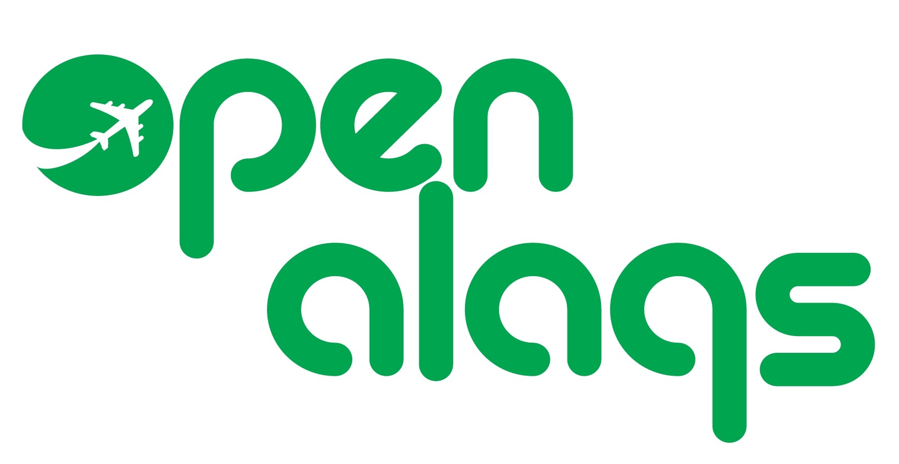
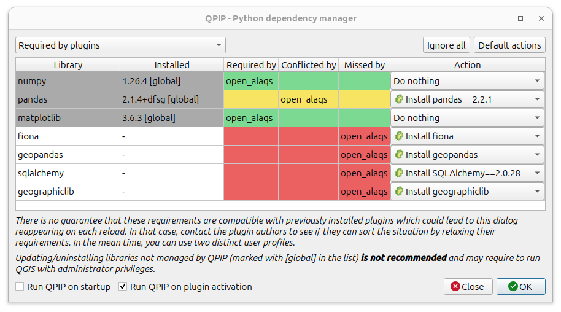
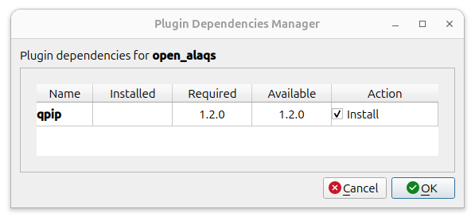

Open-ALAQS¶
Open-ALAQS is a QGIS plugin for airport local air quality studies. It builds an emission inventory from the aircraft movements (runways, taxiways, gates, flight profiles, helicopters), the stationary sources (parkings, roadways, point and area sources, engine test sites) of an airport study, and prepares the inputs of the AUSTAL dispersion model.

The User Guide describes how to build and run a study. What changed in each version is in the CHANGELOG.
Table of contents¶
- Installation
- Install QGIS
- Install Open-ALAQS
- Install the dependencies
- Upgrading from an earlier version
- Quick start with the training example
- What the plugin calculates
- Aircraft
- Other sources
- Meteorological data
- Dispersion with AUSTAL
- Running without the QGIS interface
- Documentation
- Validation
- GSE application
- Development
- Code style
- Tests
- Updating the Open-ALAQS database templates
- Debugging
- Documentation site
- Contribute
- License
- Contact
Installation¶
Install QGIS¶
Open-ALAQS needs QGIS 3.34 or later (qgisMinimumVersion in open_alaqs/metadata.txt). Download QGIS from the QGIS download page. On Windows, use the OSGeo4W installer with the Advanced Install route; if QGIS was installed otherwise, uninstall it first. During the installation, accept the unmet dependencies and the license agreements.
Install Open-ALAQS¶
The plugin is the open_alaqs/ folder of the repository (the folder with metadata.txt), not the repository root.
From the plugin zip (open_alaqs.v<version>.zip on the Releases page, not the "Source code" archives): in QGIS, Plugins → Manage and Install Plugins → Install from ZIP, select the zip and click Install Plugin.
From a clone of the repository: copy (or link) the open_alaqs/ folder into the QGIS plugin directory, so that metadata.txt ends up directly in:
- Windows:
%APPDATA%\QGIS\QGIS3\profiles\default\python\plugins\open_alaqs\ - macOS:
~/Library/Application Support/QGIS/QGIS3/profiles/default/python/plugins/open_alaqs/ - Linux:
~/.local/share/QGIS/QGIS3/profiles/default/python/plugins/open_alaqs/
Then enable it in Plugins → Manage and Install Plugins → Installed (tick "open_alaqs").
Install the dependencies¶
The plugin needs a few Python libraries that QGIS does not ship (requirements.txt). The plugin declares the QPIP plugin as a dependency: the first time Open-ALAQS loads, QPIP lists the missing libraries and offers to install them in the QGIS Python environment.


Restart QGIS once after the installation. Open-ALAQS is then in the menu and the toolbar:
Without QPIP, install the libraries with pip install -r requirements.txt in the Python environment of QGIS.
OSGeo4W manual installation
Find and install these packages from the OSGeo4W shell: - `qgis-ltr-full` (3.34.x or newer) - `python3-fiona` - `python3-geopandas` (2.x.x)Upgrading from an earlier version¶
Results change between versions, and a study file keeps the schema and the reference tables (engines, aircraft, profiles) of the version that created it. Before recalculating a study made with an earlier version, read documents/user/UPGRADING.md: which results change and how to update a study with scripts/migrate_alaqs.py.
Quick start with the training example¶
example/training/ holds a complete study at Rotterdam The Hague Airport (13 movements over 3 days in December 2025):
| File | Content |
|---|---|
training.alaqs |
the study (geometry, sources, study setup), opened with Load an Open ALAQS project |
training_movements.csv |
aircraft movements |
training_meteo.csv |
hourly meteorological data |
training_ads_b_data.csv |
ADS-B tracks, imported into the inventory when it is generated |
training_engine_test_events.csv |
engine test events for the area source used as a run-up pad (see its .README.md) |
training_out.alaqs |
the inventory, as produced by Calculate Emissions Inventory from the files above |
training_validation_reference.xlsx |
reference results, per movement and method, to check an installation |
recipe_config.*.json |
example configurations of the standalone pipeline |
The steps of a study (User Guide, Workflow at a glance):
- Build the study in QGIS: airport layout and sources.
- Generate the inventory with Calculate Emissions Inventory.
- Calculate emissions with Visualize Emission Calculation.
- Run the dispersion with Calculate Dispersion (AUSTAL).
The Tutorial goes through these steps with the files above.
To check an installation, calculate training_out.alaqs and compare with training_validation_reference.xlsx.
What the plugin calculates¶
Aircraft¶
| Method (GUI) | Standalone name | Fuel flow and emission indices |
|---|---|---|
| ByMode | bymode |
ICAO EEDB fuel flow and emission indices of each LTO mode (taxi, approach, climb-out, take-off), times the time in mode. Optional ICCAIA NOx correction for ambient conditions on take-off and climb-out (Apply NOx Corrections, bymode_nox_corr). |
| BFFM2, fuel-flow source trajectory | bffm2_traj |
Fuel flow of each profile segment from its thrust share, scaled to ambient conditions; BFFM2 (SAE AIR5715) emission indices of NOx, CO and HC at that fuel flow, with the ambient corrections. |
| BFFM2, fuel-flow source mode_anchor | bffm2_anchor |
As above, with the EEDB fuel flow of the segment's mode. |
- Ambient conditions aloft (Atmosphere Aloft): each flight segment uses the temperature, pressure and humidity at its height, derived from the hourly meteorological row (
standard_lapseby default,surface_layerorground_held), seeATMOSPHERE_ALOFT.md. - Particulate matter: nvPM from the certified EEDB values in the LTO cycle and MEEM V1 above 3,000 ft; volatile PM (sulphate and organic) and brake wear after FOA3 (see Particulate matter). Aircraft SOx comes from the fuel sulphur content.
- Helicopters: a movement whose aircraft type is in the helicopter catalog follows the FOCA 2015 method with its own trajectories, whatever the method chosen; no APU, engine start or gate emissions are computed for it, and its ground idle is counted (Helicopters).
- Taxiing, gate (GSE, GPU), APU and engine start emissions of fixed-wing movements come from the taxi route, the gate and the movement's APU and gate settings.
Details: Aircraft emissions.
Other sources¶
Parkings and roadways (COPERT 5 emission factors), point and area sources (emission factors with activity profiles) and engine test sites: an area source marked as a test site takes its emissions from a list of test events instead of its emission factors. Details: Stationary sources and road traffic; how to set them up: User Guide, Engine test sites. The buildings layer is not used in the calculation yet.
Meteorological data¶
Calculate Emissions Inventory reads an hourly meteorological CSV (temperature, pressure, humidity, wind, stability, mixing height; format in Input formats). scripts/metar_to_alaqs_meteo.py builds that file from METAR observations (raw METAR, IEM CSV or Ogimet); fetching the observations is left to the user.
Dispersion with AUSTAL¶
Calculate Dispersion writes the AUSTAL input files from an inventory (sources, hourly emissions, meteorology, grid, receptors), runs AUSTAL and plots the results as a layer. AUSTAL itself is installed separately (AUSTAL.md); how to run it is in Dispersion with AUSTAL. The site parameters z0, d0 and ha, their defaults and how to choose them are in Site parameters.
Running without the QGIS interface¶
Which tool to use, and which ones need the QGIS Python: Running without the QGIS window.
- QGIS-free pipeline (
openalaqs_standalone/): computes the aircraft emissions of an inventory file, spreads the stationary emissions over the year, and builds the AUSTAL inputs without QGIS, PyQt or SpatiaLite (pyproj, shapely, numpy, pandas). It gives the plugin's results and runs from the repository root, for batch, server or cluster runs. Commands and options:USAGE.md; the AUSTAL writer is inaustal_prep/. - Scripts using the plugin's code (run with the QGIS Python), listed in
scripts/README.md: scripts/emissions_austal/: emissions of an inventory and, optionally, the AUSTAL inputs, in one run;scripts/austal_from_csv/: AUSTAL inputs from emission and meteorological CSVs, without a.alaqsfile;scripts/import_engine_test_events.py: engine test events from a CSV, for several sources at once;scripts/migrate_alaqs.py: update a study made with an earlier version.
Documentation¶
The documentation index lists every document by task, with a glossary of the terms used. The most used ones:
| How to... | Read |
|---|---|
| build and run a study in QGIS | User Guide |
| learn with the shipped example | Tutorial: Rotterdam The Hague |
| prepare the movements, meteo, ADS-B or receptor files | Input formats |
| run AUSTAL and view the results | Dispersion with AUSTAL |
| fix an error message | Troubleshooting |
| learn how the emissions are calculated | Aircraft, stationary sources and road traffic, helicopters, ambient conditions aloft |
| check or reproduce the results | Validation guide |
The training course slides are in documents/pdf/. They date from March 2026, before 5.4.1; their errata list where they differ from the current plugin. The same documents can be built as a searchable website, see Documentation site.
Validation¶
- The BFFM2 emission-index step is checked against two CAEP/14 BFFM2 reference cases (
openalaqs_standalone/validation/tests/test_caep14_bffm2_reference_case.py), and MEEM V1 against MEEM V1 reference cases (tests/test_meem_v1.py). - These reference cases do not cover how the fuel flow is derived from the profile. For the whole calculation (every method, the NOx correction and the helicopters), the plugin, the QGIS-free pipeline and the project's CAEP14 reference implementation (
compute_caep14_reference.py) agree movement by movement on the training studies.
See VALIDATION_GUIDE.md and CAEP14_VALIDATION.md.
GSE application¶
A separate utility for ground support equipment (GSE) emissions is in gse_application/ (python3 gse_application/gse.py), see gse_application/README.md.
Development¶
Code style¶
pre-commit runs autoflake, isort, black and flake8 on each commit:
pip install pre-commit
pre-commit install
pre-commit run --all-files
Tests¶
From the repository root, with QGIS on the Python path (the QGIS-free pipeline's tests need only its own dependencies):
QT_QPA_PLATFORM=offscreen PYTHONPATH=$PWD python3 -m pytest # plugin and standalone suites
QT_QPA_PLATFORM=offscreen PYTHONPATH=$PWD python3 -m pytest --run-slow # including the slow tests
CI runs the suites in the QGIS Docker images 3.40 and 3.44 (.github/workflows/test.yaml). tests/data/ holds the test studies: AIRPORT_A/ is an earlier version of the training study (11 taxiways, its own movements) with pre-computed outputs; its two comparison spreadsheets date from 5.0.0 and do not reflect the current results.
Updating the Open-ALAQS database templates¶
New studies are copies of open_alaqs/core/templates/project.alaqs, new inventories of inventory.alaqs. Both are built by tools/template_build/generate_templates.py from the SpatiaLite scaffold, the SQL scripts in tools/template_build/sql/ and the reference data in open_alaqs/database/data/*.csv; see tools/template_build/README.md. A change to the schema needs a matching change to scripts/migrate_alaqs.py users can run on their studies.
Debugging¶
Use the QGIS Python console (Plugins → Python Console), or the QGIS Dev Tools plugin (debugpy) to attach VS Code or PyCharm.
Documentation site¶
The Markdown files of the repository can be built into a website with full-text search and navigation (MkDocs with the Material theme). The configuration is tools/docs_site/mkdocs.yml:
pip install -r tools/docs_site/requirements.txt
mkdocs serve -f tools/docs_site/mkdocs.yml # preview at http://127.0.0.1:8000
python3 tools/check_doc_links.py checks every relative link and anchor of the Markdown files. CI runs both on each pull request (.github/workflows/docs.yaml).
The site is published at https://eurocontrol-asu.github.io/open_alaqs/, one version per release: /<version>/ (for example /5.4.1/) and /latest/, the newest release. The same workflow publishes a version when a v* tag is pushed, or when it is started by hand (Actions > Documentation > Run workflow, optionally with a version; by default the version in open_alaqs/metadata.txt). The versions are kept on the gh-pages branch (mike); the repository's Pages source must be GitHub Actions. The plugin's Open ALAQS documentation button opens the version of the installed plugin.
Contribute¶
Contributions are welcome. Please open an issue to discuss substantive changes before submitting a pull request; small fixes (typos, documentation, missing tests) can go directly to a pull request. In a pull request:
- run the test suite and
pre-commit run --all-files; - update the documentation page that covers the topic (the documentation index says which one) and run
python3 tools/check_doc_links.py; - add a regression test for any change of behaviour;
- reference the issue number.
License¶
This software is published under the European Union Public Licence v. 1.2 (LICENCE.md) with the amendments described in AMENDMENT_TO_EUPL_license.md, reflecting EUROCONTROL's status as an international organisation.
Contact¶
For questions, bug reports or feature requests, write to open-alaqs@eurocontrol.int or open an issue.